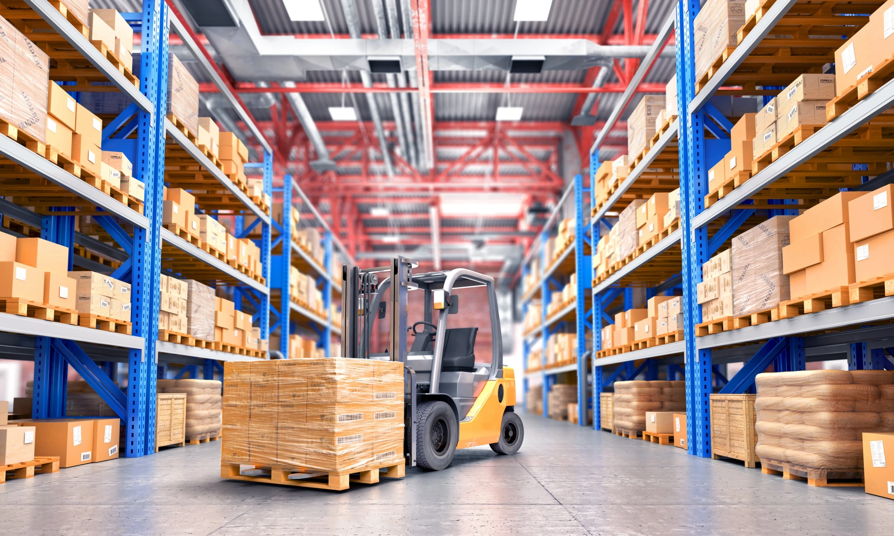

Технические характеристики

Склад 1
Оснащён современными системами хранения и управления запасами. Обеспечивает автоматизацию всех процессов, позволяя увеличить эффективность работы на 30%.
Склад 2
Предлагает интеграцию с ERP-системами, что позволяет управлять запасами в реальном времени и минимизировать потери. Идеально подходит для крупных компаний.
Склад 3
Имеет инновационную систему мониторинга, которая позволяет отслеживать движение товаров и их состояние в режиме реального времени. Обеспечивает высокий уровень безопасности.
- Системные требования: операционные системы, серверы, базы данных.
- Интеграции: ERP-системы, бухгалтерия, CRM.
- Безопасность: SSL-сертификаты, VPN, резервное копирование.
- Масштабируемость: рост системы под объёмы склада.